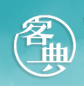
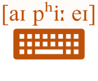
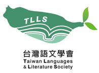
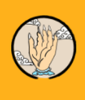
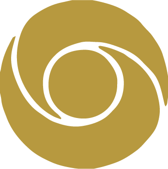

櫳震的個人網頁
Brian's Website
首頁
關於我
經歷
著作
文學作品
專長與興趣
推薦網站連結
聯絡資訊
相關網站及推薦連結
LINKS — 點擊卡片即可前往
學術機構
國立清華大學
National Tsing Hua University
國立清華大學臺灣語言研究與教學研究所
Taiwan Languages & Language Teaching
國立東華大學
National Dong Hwa University
國立東華大學中國語文學系
Dept. of Sinophone Literatures
辭書與文獻資料庫

教育部臺灣客語辭典
客語詞彙查詢
教育部臺灣台語常用詞辭典
台語詞彙查詢
萌典
華、台、客三語整合辭典
中研院漢字古今音資料庫
歷代字音查詢
韻典網
韻書電子檢索
中國哲學書電子化計劃
古籍全文資料庫
語音學與語料工具

IPA Character Picker
國際音標輸入工具
Seeing Speech
發音構音影像資料庫
中研院 CKIP Lab
中文語言處理實驗室
機構與學會
客家委員會
Hakka Affairs Council

台灣語文學會
Taiwan Languages & Literature Society

中華民國聲韻學學會
Society of Chinese Phonology
宗教與刊物

佛教弘誓學院
Buddhist Hongshi College
無境界者 線上雜誌
線上刊物